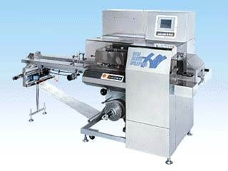

KBF-750型 横ピロー包装機
生産終了機

特 徴
包装フィルムの上に製品を直接乗せて包装するKBF-7502F型逆ピロー包装機の小型版。非常にコンパクトながら，ガス充填包装にも対応するBOXモーション機構や，包装データ登録99種類など大型機に負けない機能を搭載。また，兼用性が広く，製品切換え時の部品交換も不要ですので使い易さも抜群です。オプションにてランプの光で袋長さを表示するガイドランプ付供給コンベヤを用意。無地フィルム等にも簡単対応します。
仕 様
■
使 用 例
どら焼き・蒸し饅頭・串団子・餅菓子・パウンドケーキ等，ベタ付きのある和菓子、洋菓子も包装可能。クッキー・米菓等のバラ物にも最適です。他に，生肉・魚の切り身・麺類・練り物や食品以外の製品にも対応しています。
後継機
KBF-700e型シリーズ
HOMEへ戻る
Copyright (C) KAWASHIMA PACKAGING MACHINERY CO.,LTD. All Rights Reserved.